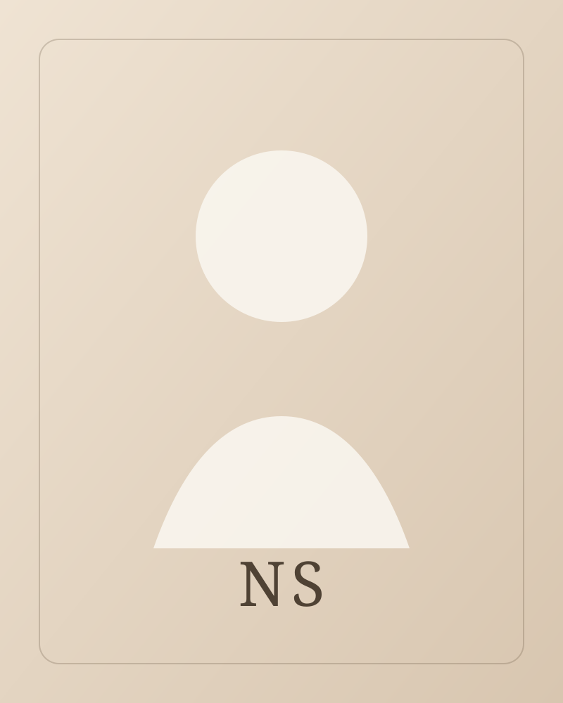

Portfolio
Personal portfolio
Space for featured ventures, investments, and personal work.
Portfolio details will be added here.
Current lens
Vision, operating structure, and long-horizon company building.

Overview
I set the direction of the studio, work closely with founders, and help turn strong ideas into companies that can actually scale.
Portfolio
Space for featured ventures, investments, and personal work.
Portfolio details will be added here.
Current work
A flexible section for current initiatives, operating priorities, and active company-building work.
This section is ready for future updates.